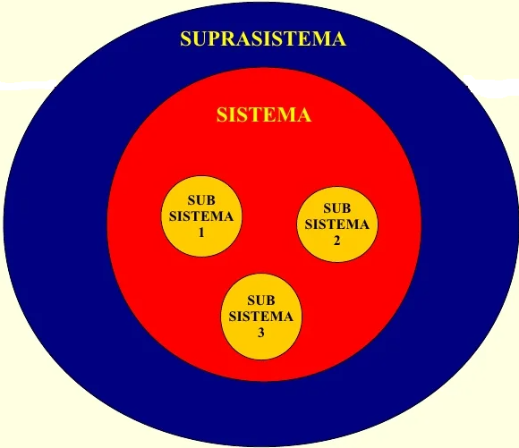
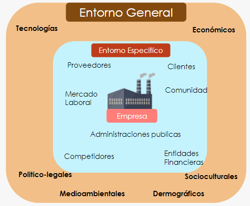
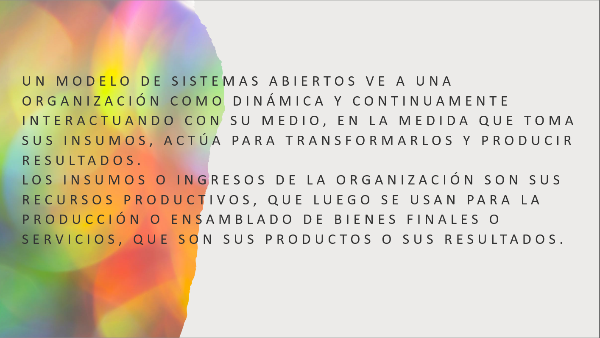
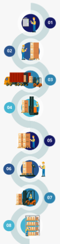
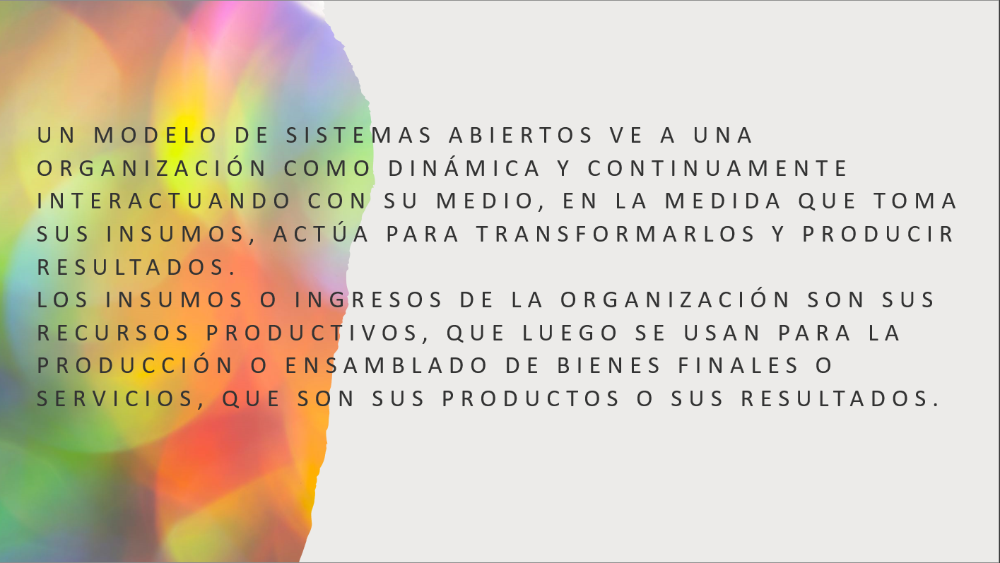
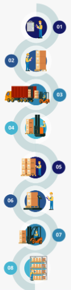

Esta asignatura aporta al perfil del Ingeniero en sistemas computacionales la capacidad de coordinar y participar en proyectos interdisciplinarios y una visión empresarial para detectar áreas de oportunidad que le permitan emprender y desarrollar proyectos aplicando las tecnologías de la información y comunicación.
La materia consiste en la identificación de las áreas básicas de una organización, su administración y su entorno considerando el aspecto de tomas de decisiones y la dinámica del proceso administrativo. Esta asignatura se relaciona con los temas de etapas de la administración de proyecto y metodología de administración de proyectos con la materia de gestión de proyectos de software y con los temas de desempeño gerencial y organizacional con la materia de cultura empresarial.
El entorno de la empresa hace referencia a los factores externos que influyen en la empresa y en su actividad y, desde luego, es tan relevante como las actividades diarias de los empleados.
El analisis del entorno de cualquier empresa implica un estudio de gran profundidad y resulta de gran trascendencia.
Modelos de sistemas
La empresa es un sistema, que está formada por una serie de elementos, que se organizan y se relacionan entre sí, estos elementos se organizan a su vez en subsistemas como:

• El área de producción y aprovisionamiento.
•El área comercial.
• El área de recursos humanos que también se relacionan entre sí.
Sistema Empresarial
En ocasiones, los proveedores o los clientes tienen mucho poder de negociación debido a su tamaño, e imponen sus condiciones a las empresas.

Medios de las empresas
La administración entonces es un proceso a través del cual se coordinan y optimizan los recursos de un grupo social con el fin de lograr la máxima eficacia, calidad y productividad en la consecución de sus objetivos.
La estrategia empresarial hace referencia al conjunto de acciones que conducen a una ventaja competitiva a largo plazo, lo cual resulta imprescindible para llevar a cabo el análisis del entorno de la empresa, pues es necesario adaptarse a éste.
El entorno específico
El análisis del entorno específico es fundamental a la hora de decidir dónde se ubica la empresa. Los principales componentes del entorno específico son los siguientes:
El entorno general
En este caso nos referimos a factores más difíciles de controlar, no tan directamente vinculados a la empresa pero que en muchas ocasiones tienen una influencia decisiva.
 


